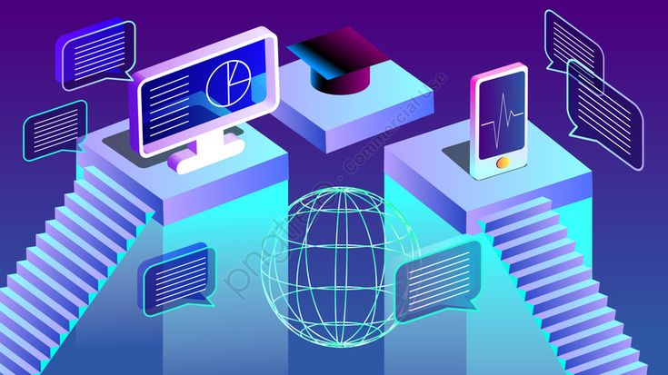

Perkembangan Teknologi, Informasi dan Komunikasi
Ditulis oleh Raflitya Rahmanpada 2 november 2024
Jika berbicara tentang teknologi, tentunya tidak bisa dipisahkan dari kehidupan manusia. Selamanya, selama peradaban manusia masih ada, teknologi akan terus menjadi hal terpenting dalam kehidupan. Hal yang saat ini sedang menjadi trand dan ramai diperbincangkan adalah teknologi informasi dan komunikasi (TIK) yang mana merupakan salah satu hal terpenting di abad ini. Tidak dapat dipungkiri kalau TIK tidak bisa dipisahkan dari kehidupan manusia. Mulai dari anak kecil hinga orang tua, pedagang kecil hingga pengusaha besar, baik disadari maupun tidak sudah begitu tergantung pada TIK.
Jika dilihat dari kacamata sejarah, TIK sesungguhnya sudah mulai dikenal manusia sejak beratus-ratus berabad-abad lalu. Sejak manusia diciptakan di muka bumi ini, manusia sudah mulai mencoba berkomunikasi dengan symbol-simbol dan isyarat. Hal ini merupakan titik awal perkembangan TIK. TIK berkembang dengan sangat pesat hingga saat ini. Saat ini, jarak dan waktu seakan tidak lagi menjadi halangan dalam berkomunikasi. Orang yang berada di pulau yang berbeda bahkan negara yang berbeda kini sudah mampu melakukkan komunikasi bahkan mampu ditampilkan secara visual. Salah satu hal yang sedang menjadi trend sat ini adalah kegiatan yang berbasis internet dan elektronik. Beberapa contoh diantaranya adalah e-learnig, e-banking, e-library, e-labolatory, e-mail dan sebagainya. Aktivitas-aktivitas berbasis elektronik ini sudah pasti sangat membantu kegiatan manusia. Dengan hal tersebut di atas, dimensi ruang dan waktu tidak lai menjadi hambatan. Selain itu,proses pengolahan data pun semakin cepat dan efisien. Berbagai barang elektonik mulai dari televise, handphone, pager, PDA, laptop hingga palmtop sudah menjadi barang-barang yang tidak asing lagi bagi masyarakat. Perkembangan TIK pun semakin pesat seiring dengan ditemukannya alat-alat yang lebih canggih.
Melihat apa yang terjadi saat ini, dapat dibayangkan apa yang mungkin dapat terjadi di masa nanti. Jauhnya jarak tidak lagi akan terasa. Kelak komunikasi jarak jauh akan dilakukan dengan hologram tiga dimensi yang begitu nyata. Pekerjaan-pekerjaan manusia akan mulai dikerjakan oleh robot yang bekerja secara otomatis dan mampu belajar dari pengalamannya sehingga mampu mengkoreksi kesalahan yang ia lakukan dengan sendirinya. Teknologi komputer pun akan berkembang dengan pesat. Komputer masa depan akan mampu merespon tindakan-tindakan manusia dan memahami bahasa manusia. Lebih canggihnya lagi, komputer generasi yang akan datang diramalkan, akan memiliki perasaan layaknya manusia.
Dampak Perkembangan Teknologi
Sisi positifnya adalah masyarakat yang menjadi pengguna aktif teknologi, situs-situs, serta media komunikasi sosial, mereka dapat menyampaikan informasi dan juga mendapatkan informasi secara lebih mudah. Komunikasi khususnya di Indonesia terasa seakan menjadi lebih mudah seiring perkembangan teknologi ini.Bila dilihat dari sisi negatifnya, kemajuan teknologi ini membuat orang menjadi malas untuk berkomunikasi secara langsung. Orang lebih memilih berinteraksi melalui handphonenya ketimbang berkomunikasi dengan orang disekitarnya. Contoh, seorang anak sibuk ber-chatting dengan teman melalui handphone miliknya ketimbang berbicara dengan saudaranya saat acara keluarga sedang berlangsung. Kadang kemajuan teknologi ini juga membuat seseorang menjadi kurang peka dengan ekspresi saat sedang berkomunikasi dengan lawan bicaranya.
Saat orang sudah terlalu sibuk dengan telepon atau PC miliknya, lalu mereka menghabiskan waktu yang cukup lama untuk berinteraksi di dunia maya, mereka tidak sadar bahwa saat itu mereka sedang membuang waktunya untuk berinteraksi dengan hidup sebenarnya yang berada disekitar mereka. Banyaknya pengguna sosial media dan pengakses internet ini, membuktikan bahwa masyarakat Indonesia lebih suka berinteraksi dan bergaul secara virtual dengan pengguna sosial media dan internet lainnya.
Selain itu dampak negatifnya adalah perkembangan mereka dalam hal bersosialisasi menjadi sangat lamban. Karena mereka terlalu fokus dengan gadget tersebut. Dan di Indonesia kini, peranan media massa, teknologi, serta sosial media memegang kendali yang cukup tinggi. Hal tersebut dapat dengan mudah dan relatif cepat untuk mempengaruhi opini publik. Contoh, di dalam dunia Twitter dikenal istilah buzzer. Buzzer disini bertindak semacam opinion leader yang bila orang itu men-tweet sesuatu, maka akan banyak yang berfikir seperti buzzer tersebut berfikir. Kemajuan teknologi memang membawa dampak positif yang banyak namun begitu juga dampak negatifnya. Dalam kasus buzzer ini misalnya, bila informasi yang disebarkan merupakan ilmu penting dan berguna maka itu menjadi hal yang sangat positif, namun bila informasi tersebut merupakan rekayasa atau fitnah terhadap seseorang atau sesuatu maka hal itu akan merugikan pihak terkait.
Kesimpulan yang perlu kita perhatikan adalah semua orang khususnya masyarakat Indonesia harus benar-benar cerdas utnuk memilah mana sisi positif dan negatifnya agar perkembangan teknologi yang terjadi serta bagaimana komunikasi itu selayaknya dilakukan, dijalankan dengan benar dan seimbang.